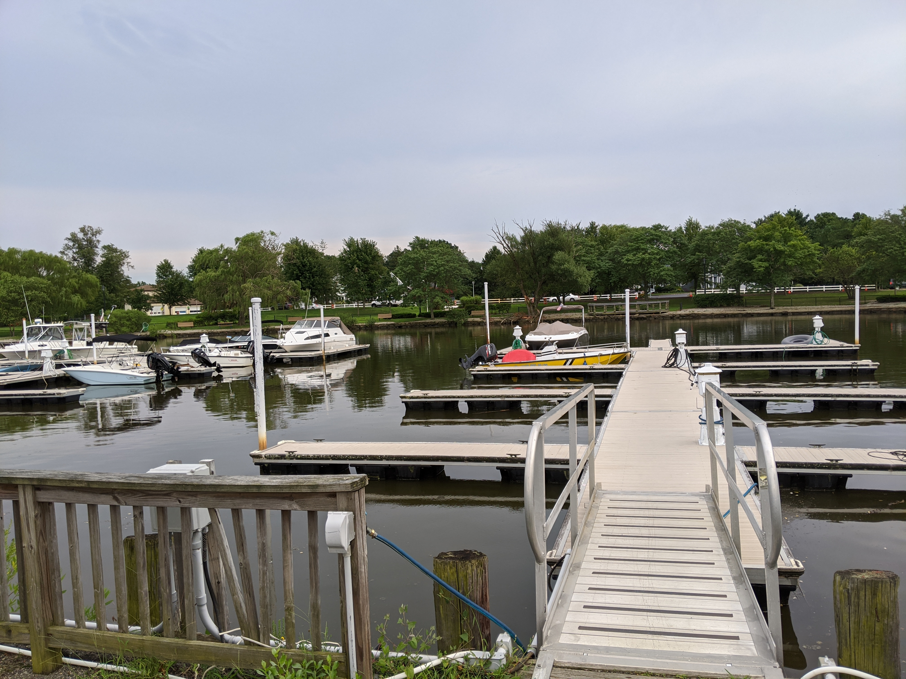
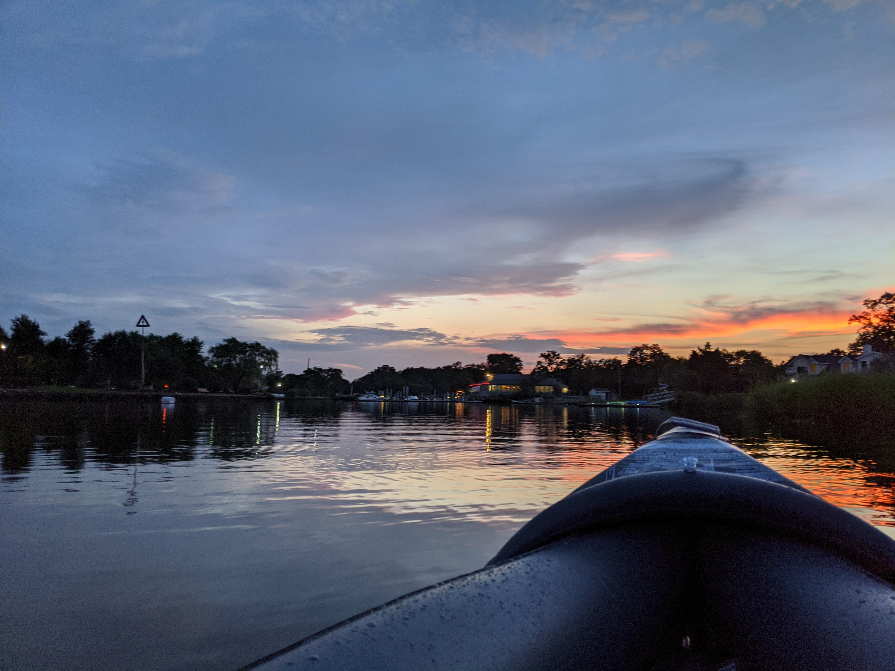

Paddle away!!
Weeks ago, it was pretty uncertain when we would be able to step outside to the world. As the coronavirus chaos still drags on, we should be safe for ourselves and for the sake of others. Everybody must have come up with a new routine to keep themselves sane during this tiring times.
But little time-out is what everybody is looking for. And if it is not hurting anybody, why not!!
Soo..
I have slowly started to venture out for little outdoor activities, of course, with all the necessary precautions.
While I have made it a recent habit to spend my weekends doing Cricketing and Kayaking among other stuff, I decided to do some over a weekday, to avoid bumping into any humans. And I was not wrong. Upon having confirmed this plan, my friends and I decided go to The Marina at Ocean port for Kayaking.
The evening of the trip, we started our trip and reached the marina around 6.30 pm. Though I had a kayak of my own, we are not expected to bring one with you as there is a provision to rent the kayaks and the paddle boats there. Upon informing about possesing own kayaks we were required to sign a waiver form online (they provided a website address). On a side note, you will be charged a $10 docking fee, which comes at free of cost for the first timers like me. I own an inflatable kayak and it's generally said that they are not dependable. But I have done a quite a bit of kayaking with the same and have not found any issues with it so far. Touch-wood :)

So.. We got ready to set sail, by inflating the kayak. We went for a 3 mile kayak, to and fro. As we slowly kayaked up the river, we got to navigate under a rail track and went past a lot of architecturally beautiful and pretty houses which were a treat to the look at. And clubbed with these was the most beautiful sunset and the river reflections were splendid. It was an incredible beauty to witness these as we paddled through.
The water quality was good, with a few jelly fishes. After about a 30 minutes of kayaking, we stopped to click pictures. One of the things that made this experience so great was the fact that we were almost completely alone for the entire trip. There were some doing paddle boating and a few jet skiing. We were also treated by a nice woman on the bridge, who threw us the fruit juices while we were wading through. We were surprised by the gesture, as in, how somebody could be so sweet to the strangers :)
It was a easy cruise without a need for a guide per se. We can go on to be on the water for as long as we want except that there are no lighting which would have made it difficult, so we decided to head back around 7.30 pm. It took us about 45 minutes to an hour one way and a little longer than that for the return trip as the sun decided to go away in the gorgeous retreat! Also, the river current was a little stronger which also added a few more minutes to our trip back. We finished our entire trip around 8.30 pm, deflated our kayak, ans started back home!!
You can resit getting into the water after seeing something like below :)
Its a lot more fun!
Although we could not dine and enjoy the nautical view, it was indeed a great evening. I would definitely go back when things get back to normal to grab a drink and to just sit and overlook the calm waters.
Until next time, happy exploring!!